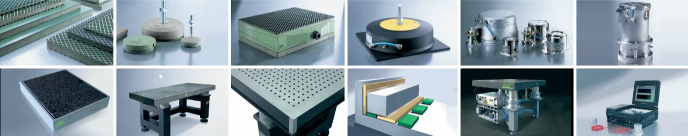
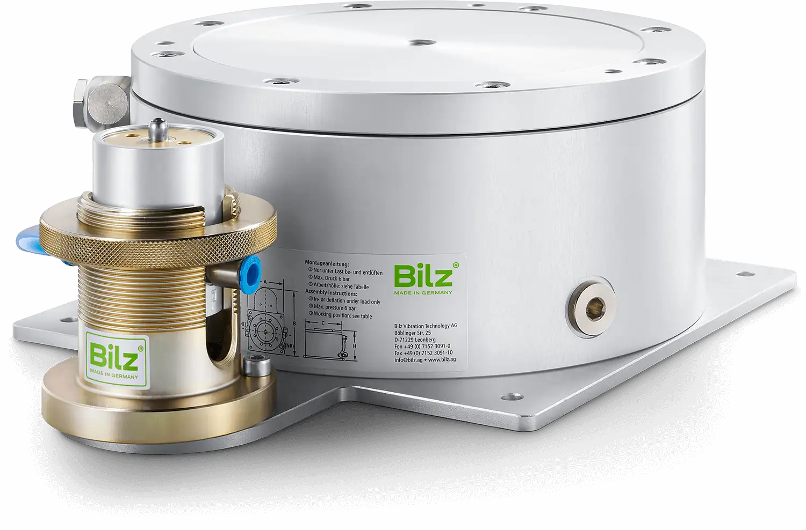
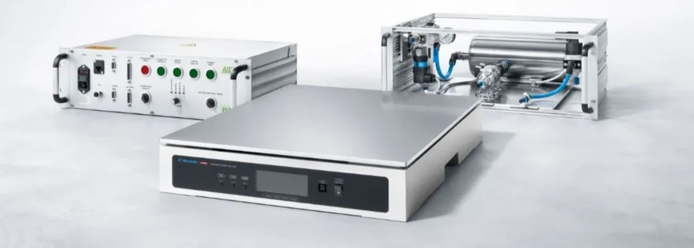
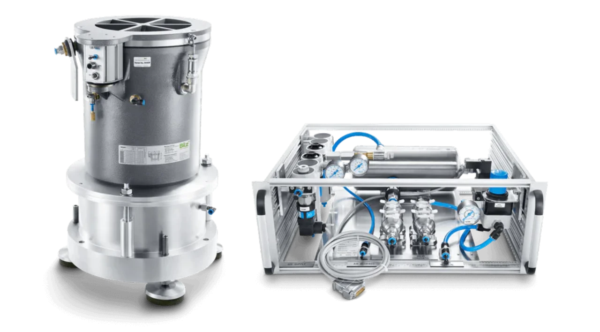
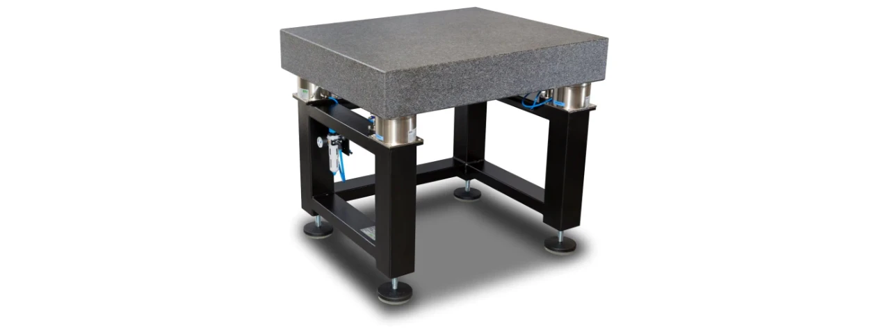
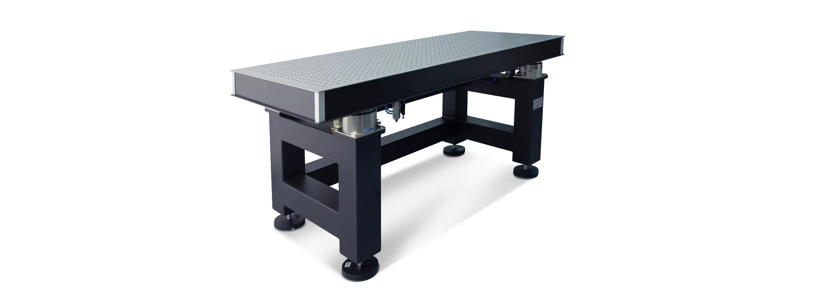
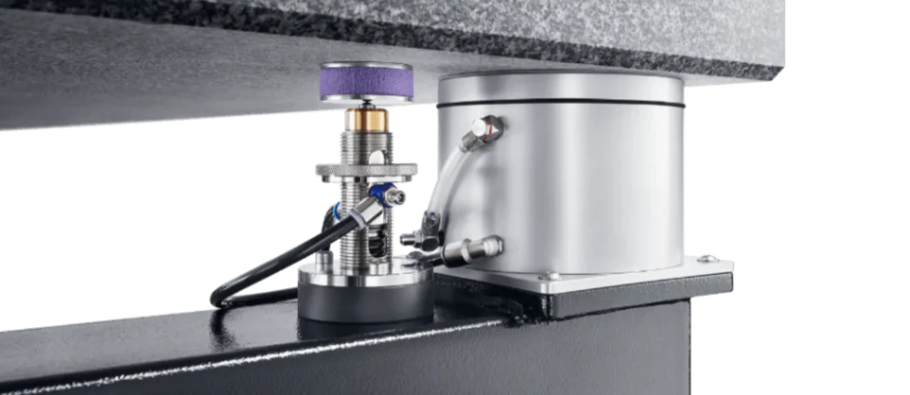
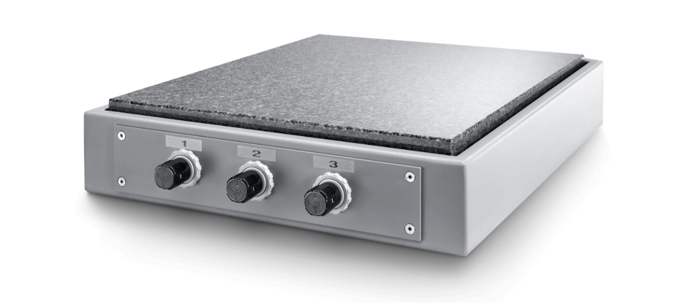

Eksperci w redukcji drgań
Bilz AG to światowy lider w dziedzinie wibroizolacji. Od ponad 50 lat dostarczamy zaawansowane rozwiązania, które chronią maszyny, urządzenia i konstrukcje przed szkodliwymi drganiami. Nasze systemy wibroizolacyjne zapewniają stabilność, precyzję i dłuższą żywotność Twojego sprzętu, niezależnie od branży – przemysłu, budownictwa czy transportu.

Czym jest wibroizolacja?
Wibroizolacja to technologia, która redukuje drgania i wibracje generowane przez maszyny, ruch uliczny czy inne źródła. Dzięki naszym produktom minimalizujemy wpływ drgań na otoczenie, co zwiększa wydajność, bezpieczeństwo i komfort pracy. W Bilz AG oferujemy kompleksowe rozwiązania wibroizolacyjne, które spełniają najwyższe standardy jakości.

Rozwiązania wibroizolacyjne
Oferujemy szeroką gamę produktów wibroizolacyjnych:
- Izolatory wibracyjne: Skutecznie tłumią drgania w maszynach przemysłowych, takich jak obrabiarki, prasy czy kompresory.
- Systemy antywibracyjne: Zaawansowane technologie pneumatyczne i hydrauliczne, idealne dla precyzyjnych zastosowań, np. w laboratoriach.
- Podkładki wibroizolacyjne: Elastyczne materiały do izolacji fundamentów budynków i konstrukcji.
- Rozwiązania na zamówienie: Projektujemy indywidualne systemy wibroizolacyjne, dostosowane do Twoich potrzeb.

Dlaczego wybrać wibroizolację od BILZ Vibration Technology AG?
- Doświadczenie: Ponad pół wieku innowacji w zakresie wibroizolacji.
- Jakość: Produkty spełniające najwyższe standardy technologiczne.
- Wszechstronność: Rozwiązania dla przemysłu, budownictwa i sektorów precyzyjnych.
- Wsparcie ekspertów: Nasi specjaliści pomogą Ci dobrać idealny system wibroizolacyjny.

Nasze systemy wibroizolacyjne znajdują szerokie zastosowanie
- Przemysł: Redukcja drgań w maszynach zwiększa ich precyzję i żywotność.
- Budownictwo: Izolacja fundamentów przed wibracjami z otoczenia.
- Transport: Wibroizolacja w pojazdach szynowych i drogowych poprawia komfort.
- Sektory precyzyjne: Ochrona wrażliwych urządzeń, takich jak mikroskopy czy lasery.

1. EPPC™ (Electronic Pneumatic Position Control)
EPPC™ to elektroniczny system kontroli poziomu, który zapewnia optymalną izolację drgań dla maszyn o wysokiej precyzji, takich jak mikroskopy, maszyny pomiarowe oraz urządzenia testowe i produkcyjne. System EPPC™ może współpracować z trzema do sześciu grupami kontrolnymi membranowych sprężyn powietrznych BiAir®, co pozwala na kontrolę do sześciu stopni swobody. Bilz oferuje szeroką gamę różnych rozmiarów sprężyn powietrznych do projektowania systemu.
Kluczowe cechy EPPC™:
- Precyzyjna kontrola poziomu: Zapewnia utrzymanie poziomu roboczego maszyny, minimalizując wpływ drgań zewnętrznych.
- Szeroki zakres konfiguracji: Możliwość dostosowania liczby i rodzaju sprężyn powietrznych w zależności od specyficznych potrzeb aplikacji.
- Integracja z różnymi systemami: Łatwe połączenie z istniejącymi maszynami i urządzeniami pomiarowymi.

2. EPN (Elektronische Niveauregelsystem)
EPN to elektroniczny system kontroli poziomu, przeznaczony do stosowania w dynamicznych i wrażliwych na drgania maszynach pomiarowych, a także w urządzeniach testowych i produkcyjnych. System wykorzystuje inteligentny algorytm sterowania oraz elektroniczne zawory, co pozwala na znaczne zmniejszenie odchyleń i czasów ustalania w porównaniu z mechanicznymi systemami kontroli poziomu.
Kluczowe cechy EPN:
- Zaawansowane sterowanie: Inteligentny algorytm zapewnia szybkie i precyzyjne dostosowanie poziomu maszyny.
- Łatwa integracja: Możliwość łatwego włączenia do istniejących systemów maszynowych.
- Minimalizacja drgań: Skuteczne tłumienie drgań, co przekłada się na zwiększoną dokładność pomiarów i jakości produkcji.
Stoły laboratoryjne
Firma Bilz specjalizuje się w technologii tłumienia drgań i oferuje różnorodne rozwiązania, w tym stoły laboratoryjne typu LTH i LTO. Te stoły są zaprojektowane z myślą o precyzyjnych zastosowaniach laboratoryjnych, zapewniając stabilność i minimalizując wpływ drgań na prowadzone eksperymenty.
Stoły laboratoryjne typu LTH (blat granitowy):

Stoły LTH są wykonane z hartgesteinu, materiału charakteryzującego się wysoką twardością i odpornością na wibracje. Dzięki swojej konstrukcji skutecznie tłumią drgania, co jest kluczowe w precyzyjnych pomiarach i analizach laboratoryjnych.
Stoły laboratoryjne typu LTO (blat optyczny):

Stoły LTO wyposażone są w płyty optyczne, które zapewniają dodatkową stabilność i precyzję. Są idealne do zastosowań wymagających wyjątkowej dokładności, takich jak eksperymenty optyczne czy mikroskalowe analizy.
Oba typy stołów są dostępne z różnymi opcjami systemów tłumienia drgań, takimi jak BiAir®-ED, BiAir®-OC czy BiAir®-PAS, co pozwala na dostosowanie ich do indywidualnych potrzeb i specyficznych wymagań aplikacyjnych.
Stół laboratoryjny LTH (hard stone):
Model LTH to stół o wyjątkowo stabilnej konstrukcji, z blatem granitowym i wbudowanym systemem antywibracyjnym, co gwarantuje wysoką odporność na drgania i stabilność. Jest idealny do zastosowań, gdzie precyzja i odporność na zmiany poziomu są kluczowe.
- Konstrukcja: Masywna rama stalowa zapewnia trwałość i stabilność.
- Izolacja drgań: Aktywne tłumienie drgań za pomocą poduszek powietrznych BiAir®-ED, co pozwala na osiągnięcie częstotliwości naturalnej na poziomie 2,5–3 Hz w pionie.
- Automatyczne poziomowanie: System mechaniczno-pneumatyczny utrzymuje poziom stołu z dokładnością do ±0,01 mm, nawet przy zmianach obciążenia.
- Blat roboczy: Wykonany z twardego kamienia o wykończeniu szlifowanym, zapewnia trwałość i łatwość w utrzymaniu.

Stół laboratoryjny LTO (optical table top):
Model LTO jest dedykowany aplikacjom wymagającym wyjątkowej precyzji, zwłaszcza w zakresie poziomej izolacji drgań. Wyposażony w poduszkę powietrzną BiAir®-PAS, oferuje doskonałe parametry tłumienia.
- Konstrukcja: Wzmocniona rama stalowa z regulowanymi stopkami poziomującymi.
- Izolacja drgań: Pendularne poduszki powietrzne BiAir®-PAS redukują częstotliwość naturalną w pionie do około 2 Hz i w poziomie do około 1,2 Hz.
- Automatyczne poziomowanie: Zaawansowany system poziomowania utrzymuje poziom roboczy z dokładnością do ±0,01 mm, niezależnie od zmian obciążenia.
- Blat roboczy: Wykonany z rdzenia plastra miodu ze stali o wysokiej tłumienności, dostępny z lub bez gwintowanych wkładek, w zależności od potrzeb aplikacji.
Oba stoły są dostępne w różnych konfiguracjach, umożliwiających dostosowanie do indywidualnych potrzeb użytkownika. Dzięki zaawansowanej technologii tłumienia drgań i precyzyjnym systemom poziomowania, stoły LTH i LTO zapewniają optymalne warunki pracy w wymagających środowiskach laboratoryjnych.
Zalety:
- Precyzyjna kontrola drgań: Zaawansowane systemy tłumienia zapewniają minimalizację wpływu drgań zewnętrznych.
- Stabilność poziomu: Mechaniczno-pneumatyczne systemy poziomowania gwarantują utrzymanie poziomu roboczego, co jest kluczowe w wielu aplikacjach.
- Elastyczność konfiguracji: Możliwość dostosowania parametrów technicznych do specyficznych wymagań użytkownika.
- Trwałość i niezawodność: Solidna konstrukcja i wysokiej jakości materiały zapewniają długowieczność i minimalne wymagania konserwacyjne.
Stoły laboratoryjne LTH i LTO firmy Bilz AG stanowią kompleksowe rozwiązania dla laboratoriów i środowisk przemysłowych, gdzie precyzja i kontrola drgań są kluczowe dla sukcesu prowadzonych prac.
Platformy stołowe antywibracyjne VITAP
Bilz Vibration Technology AG oferuje zaawansowane rozwiązania w zakresie izolacji drgań, w tym platformy serii VITAP. Te produkty zostały zaprojektowane z myślą o zapewnieniu stabilności i precyzji w środowiskach laboratoryjnych oraz przemysłowych, gdzie kontrola drgań jest kluczowa dla uzyskania dokładnych wyników.
Platformy laboratoryjne VITAP są dedykowane dla aplikacji wymagających wysokiej precyzji i stabilności. Wyposażone w elementy tłumiące, takie jak gumowe sprężyny powietrzne BiAir®, zapewniają skuteczną izolację od drgań zewnętrznych.

Zalety produktów VITAP:
- Wysoka precyzja: Zapewnienie stabilnej powierzchni roboczej dla dokładnych pomiarów i eksperymentów.
- Skuteczna izolacja drgań: Ochrona przed zakłóceniami zewnętrznymi dzięki zaawansowanym systemom tłumienia.
- Elastyczność i dostosowanie: Możliwość konfiguracji produktów zgodnie z indywidualnymi wymaganiami aplikacji.
- Łatwość integracji: Proste włączenie do istniejących systemów laboratoryjnych lub produkcyjnych.
Produkty serii VITAP stanowią kompleksowe rozwiązania dla aplikacji wymagających precyzyjnej kontroli drgań i stabilności, przyczyniając się do poprawy jakości i dokładności procesów laboratoryjnych oraz przemysłowych.
MASZYNY POMIAROWE – System antywibracyjny do maszyny pomiarowej
Maszyny pomiarowe CMM wymagają szczególnie stabilnych warunków pracy, co w połączeniu z bardzo wysoką precyzją pomiarów wiodących producentów jak np. Mitutoyo Zeiss Wenzel Trimek LK Metrology Hexagon Keyence i inne często wymaga zastosowania aktywnych systemów tłumienia drgań i wibracji ze względu na to że np. wibroizolator gumowy czy sprężynowy nie spełnia oczekiwań tłumienia wibracji. Rozwiązanie stanowi system antywibracyjny do maszyny pomiarowej oparty o pneumatykę. Systemy te wykorzystują poduszki pneumatyczne, miechy oraz dampery jako elementy aktywne, działając jak wibroizolatory. Maszyny pomiarowe Mitutoyo są urządzeniami o bardzo wysokich wymaganiach dotyczących ich warunków pracy – podobnie jak Zeiss, Hexagon oraz Trimek. Maszyny pomiarowe znajdujące zastosowanie w takich segmentach jak kontrola jakości, utrzymanie ruchu oraz laboratoria badawcze stanowią integralną część procesów produkcyjnych. W naszym portfolio posiadamy wiele realizacji systemów redukcji wibracji pod maszynami pomiarowymi firm Mitutoyo oraz Zeiss.
WIBROIZOLATORY PRZEMYSŁOWE – Wibroizolatory gumowe i poduszki antywibracyjne
Stosowane w przemyśle techniki tłumienia wibracji na bazie takich produktów jak wibroizolatory sprężynowe amortyzatory czy dampery pneumatyczne skutecznie ograniczają przenoszenie się drgań na urządzenia i konstrukcje. Produkty typu wibroizolator sprężynowy, wibroizolator gumowy czy też maty tłumiące drgania są prostym i skutecznym rozwiązaniem w przemyśle i laboratoriach. Nieco prostszym ale również skutecznym produktem są maty antywibracyjne do tłumienia drgań pochodzących od dynamicznych maszyn produkcyjnych. Należą do nich maszyny pakujące, prasy mimośrodowe, śrubowe wykrawarki Amada wycinarki Trumpf i prasy hydrauliczne. W niektórych przypadkach kiedy wibroizolatory sprężynowe nie są wystarczające korzystnym jest zastosowanie bardziej zaawansowanych rozwiązań takich jak poduszki pneumatyczne czy miechy.
TECHNIKA LABORATORYJNA – Stoły antywibracyjne i wibroizolatory laboratoryjne
W technice laboratoryjnej takiej jak fizyka ciała stałego, biologia molekularna, interferometria, mikroskopy Zeiss elektronowe lub optyczne oraz wagi precyzyjne stosowane są stoły laboratoryjne wyposażone w aktywne systemy tłumienia drgań i wibracji. Tłumiki drgań oparte są w takich przypadkach na systemach pneumatycznych. Typowym tego przykładem jest stół laboratoryjny antywibracyjny wyposażony w poduszki antywibracyjne. W niektórych przypadkach pomocne mogą być stołowe platformy antywibracyjne wyposażone w wibroizolatory gumowe, odbojniki, stopy antywibracyjne, dampery, miechy lub poduszki powietrzne. Technika laboratoryjna znajduje zastosowanie również w działach kontroli jakości będących integralną częścią utrzymania ruchu w przedsiębiorstwach produkcyjnych. W przeważającej ilości przypadków w tej dziedzinie maty tłumiące nie przynoszą pożądanych efektów podobnie jak maty gumowe.
MOCOWANIA MASZYN – Wibroizolacyjne kliny ustawcze pod maszyny.
W technice obróbki metali, tworzyw sztucznych, drewna oraz produkcji opakowań często istnieje potrzeba nie tylko precyzyjnego zamocowania i wypoziomowania maszyny czy obrabiarki ale również zastosowanie tłumienia drgań i wibracji. W takich przypadkach stosowane są kliny ustawcze firmy BILZ lub stopy maszynowe pod maszynę lub stopy do maszyn z matą elastomerową tłumiącą wibracje. Typowym produktem są stopy antywibracyjne z możliwością regulacji wysokości roboczej stosowane jako kliny ustawcze wibroizolacyjne. Do tej grupy produktów należy w pierwszej linii klin ustawczy do maszyn oraz klin poziomujący do maszyn. Mają one podwójne zastosowanie jako jednocześnie element poziomujący oraz tłumiący drgania i wibracje co zabezpiecza zarówno maszynę jak i konstrukcję hali produkcyjnej przed uszkodzeniami. Zastosowanie dodatkowego produktu uzupełniającego takiego jak maty wibroizolacyjne lub wibroizolatory sprężynowe zwiększa dodatkowo żywotność maszyn i narzędzi. Stopy maszynowe wyposażone w maty antywibracyjne zapewniają większą precyzję obróbki i dłuższą żywotność maszyn i narzędzi. Niwelery wibroizolacyjne służące do poziomowania maszyn znane są również jako kliny ustawcze lub maszynowe kliny wibroizolacyjne.
MATY ANTYWIBRACYJNE – Pady tłumiące wibracje i podkładki antywibracyjne
Maty antywibracyjne stosowane jako podkładki antywibracyjne stanowią proste i skuteczne rozwiązanie problemu przenoszenia się drgań na podłoże lub na maszynę produkcyjną. Maty tłumiące firmy BILZ wykonane są z bardzo wytrzymałych konglomeratów na bazie elastomerów. Szeroka gama tych produktów umożliwia ich stosowanie we wszystkich rodzajach produkcji z uwzględnieniem odporności na obciążenia mechaniczne i oddziaływania chemiczne. Maty firmy BILZ stosowane są również jako przekładki antywibracyjne w konstrukcjach stalowych. Maty te posiadają długą żywotność i przewidziane są do wysokich obciążeń w szczególnie trudnych warunkach pracy.
STANOWISKA TESTOWE – Wibroizolatory gumowe w tłumieniu drgań i wibracji
Konstrukcje stanowisk testowych z reguły wymagają zastosowania odpowiedniej wibroizolacji zapobiegającej takim problemom jak przenoszenie się drgań i wibracji na podłoże. Systemy tłumienia drgań wykorzystują takie elementy konstrukcyjne jak wibroizolatory gumowe miechy wibroizolatory sprężynowe poduszki pneumatyczne lub miechy czy dampery. Stosowane maty antywibracyjne nie zawsze spełniają wymogi wibroizolacji ze względu na dużą dynamikę pracy tego typu urządzeń. Wibroizolator sprężynowy stanowi jedynie alternatywę do poduszek pneumatycznych i miechów ale nie dorównuje im w zakresie efektywności tłumienia drgań i prostoty obsługi. Damper pneumatyczny daje dodatkowo możliwość regulacji tłumienia i kontroli całości systemu antywibracyjnego.
ИЗМЕРИТЕЛЬНЫЕ МАШИНЫ – Антивибрационная система для измерительной машины
Измерительные машины CMM, требующие особенно стабильных условий работы, в сочетании с очень высокой точностью измерений, часто требуют использования активных систем гашения вибраций. Ведущие производители, такие как Mitutoyo, Zeiss, Wenzel, Trimek, LK Metrology, Hexagon, Keyence и другие, ставят перед этими машинами высокие требования. Это связано с тем, что традиционный резиновый или пружинный виброизолятора не отвечает требованиям по гашению вибраций. Антивибрационная система, основанная на пневматике, является решением. Эти системы используют пневматические подушки, мехи и дамперы в качестве активных элементов, которые выполняют функцию виброизоляторов.
Измерительные машины Mitutoyo, как и Zeiss, Hexagon или Trimek, имеют высокие требования к условиям их работы. Они являются неотъемлемой частью производственных процессов и находят применение в таких сегментах, как контроль качества, техническое обслуживание и исследовательские лаборатории. В нашем портфолио есть много реализованных проектов по снижению вибраций под измерительными машинами компаний Mitutoyo и Zeiss.
ПРОМЫШЛЕННЫЕ ВИБРОИЗОЛЯТОРЫ – Резиновые виброизоляторы и антивибрационные подушки
Используемые в промышленности методы гашения вибраций, такие как пружинные виброизоляторы, амортизаторы и пневматические дамперы, эффективно ограничивают передачу вибраций на устройства и конструкции. Виброизоляторы пружинные, резиновые виброизоляторы и виброгасящие матрасы — простое и эффективное решение для промышленности и лабораторий. Антивибрационные матрасы, хотя и более простые, также являются эффективным средством для гашения вибраций, исходящих от динамичных производственных машин, таких как упаковочные машины, эксцентриковые прессы, винтовые высекательные машины Amada, лазерные резаки Trumpf и гидравлические прессы. В случаях, когда пружинные виброизоляторы не являются достаточными, полезно применение более сложных решений, таких как пневматические подушки или мехи.
ЛАБОРАТОРНАЯ ТЕХНИКА – Антивибрационные столы и лабораторные виброизоляторы
В лабораторной технике, такой как физика твердого тела, молекулярная биология, интерферометрия, микроскопы Zeiss (электронные или оптические) и прецизионные весы, используются лабораторные столы, оснащенные активными системами гашения вибраций. В таких случаях виброизоляторы основаны на пневматических системах, и типичным примером является антивибрационный лабораторный стол, оснащенный антивибрационными подушками. Столовые антивибрационные платформы, оснащенные резиновыми виброизоляторами, амортизаторами, антивибрационными ножками, дамперами, мехами или воздушными подушками, также могут быть полезны в таких случаях.
Лабораторная техника также используется в отделах контроля качества, которые являются неотъемлемой частью технического обслуживания в производственных предприятиях. В большинстве случаев в этой области виброгасящие матрасы, включая резиновые матрасы, не дают желаемых результатов.
КРЕПЛЕНИЕ МАШИН – Виброизоляторные клинья для машин
В обработке металлов, пластмасс, древесины и производстве упаковки часто возникает необходимость не только точного закрепления и выравнивания машины или станка, но и применения гашения вибраций. В таких случаях применяются установочные клинья фирмы BILZ или машинные ножки с эластомерными матами для гашения вибраций. Типичный продукт — антивибрационные ножки с возможностью регулировки рабочей высоты, используемые в качестве виброизоляторных клиньев.
К этой группе продуктов относятся установочные клинья для машин и выравнивающие клинья для машин, которые выполняют двойную функцию: выравнивание и гашение вибраций. Это защищает как машину, так и конструкцию производственного цеха от повреждений. Дополнительные продукты, такие как виброизоляторные матрасы или пружинные виброизоляторы, увеличивают срок службы машин и инструментов. Машинные ножки с антивибрационными матами обеспечивают большую точность обработки и долговечность машин и инструментов. Виброизоляторы, также известные как установочные или машинные виброизоляторные клинья, используются для выравнивания машин.
АНТИВИБРАЦИОННЫЕ МАТЫ – Падс и антивибрационные подкладки
Антивибрационные матрасы, используемые в качестве подкладок, являются простым, но эффективным решением проблемы передачи вибраций на основание или производственную машину. Виброгасящие матрасы компании BILZ изготовлены из очень прочных композитов на основе эластомеров и имеют широкий ассортимент, который позволяет использовать их во всех видах производства с учетом механической прочности и химической устойчивости. Матрасы компании BILZ также используются в качестве прокладок в стальных конструкциях. Эти матрасы обладают долгим сроком службы и предназначены для высоких нагрузок в особенно сложных условиях эксплуатации.
ИСПЫТАТЕЛЬНЫЕ СТАНДЫ – Резиновые виброизоляторы для гашения вибраций
Конструкции испытательных стендов обычно требуют применения соответствующей виброизоляции для предотвращения таких проблем, как передача вибраций на основание. Системы гашения вибраций используют конструктивные элементы, такие как резиновые виброизоляторы, мехи, пружинные виброизоляторы, пневматические подушки и дамперы. Антивибрационные матрасы не всегда удовлетворяют требованиям виброизоляции из-за высокой динамичности работы таких устройств. Пружинный виброизолятор является альтернативой пневматическим подушкам и мехам, но не достигает их эффективности по гашению вибраций и простоте эксплуатации. Пневматический дампер предоставляет дополнительную возможность регулировки гашения и полного контроля всей системы антивибрации.
EKKON ➔ Представитель компании BILZ Vibration Technology A.G.
Приглашаем к деловому сотрудничеству.
Skontaktuj się z naszym przedstawicielem w Polsce
EKKON
+48 89 6755 077
+48 792 886 449
info@ekkon.eu
www.ekkon.eu
ul. Władysława Trylińskiego 2
10-683 Olsztyn